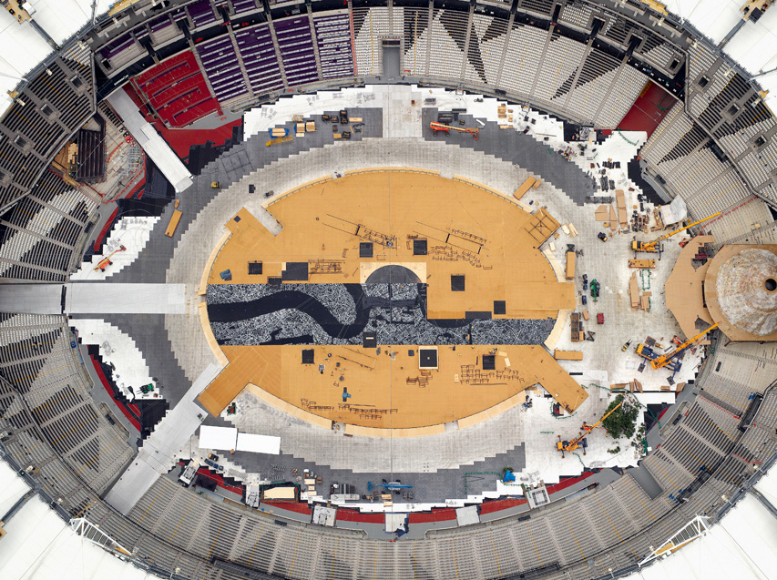

Pumpktris
Packed with 128 LEDs and a game controller stem, this electro-pumpkin features a fully playable version of Tetris. Read about the Pumpktris development on the HA HA Bird blog.
Packed with 128 LEDs and a game controller stem, this electro-pumpkin features a fully playable version of Tetris. Read about the Pumpktris development on the HA HA Bird blog.
It’s better to have a short life that is full of what you like doing, than a long life spent in a miserable way.
Alan Watts
The quote is from a recent post on Shelby White’s (Wanken) blog asking “What Do You Want To Do?” If you take money off the table completely, what is it that would get you up in the morning anxious to dive right in?
COLOR. MIX IT UP.
Paper is alive with color. Bring your creations to life using our collection of brilliantly expressive Palettes and mix your own colors with a brand new tool the Mixer—a completely new way to explore color and the biggest leap in color controls in the past 40 years. Built on our powerful new core technology, the Mixer combines an intuitive mixing control and our custom color blending for color that looks and feels right. Need more reasons to create? Our Expressive Ink Engine™ is now pressure-sensitive with support for the Pogo Connect.
The new version of Paper is here. Welcome to a colorful new world of possibilities.
Paper already is one of my favorite iPad apps, but the new color blending options put it over the top!
As a self taught photographer, Kyle Thompson began posting his surreal self portraits on Tumblr and Reddit several months ago. The unexpected exposure from his work has helped fuel his fine arts photography career.
Follow Kyle Thompson on Tumblr for more of his shots, details on his process, and answered questions.
[Y]ou know those days when you’re running around all day and doing stuff and talking to people and making calls and responding to emails and filling out paperwork and you get home and you‘re completely exhausted and you say to yourself, “What the hell did I actually get done today?”
Your Anti-Todo list has the answer.
Regardless of how great you are at communicating with clients, I think we’ve all been in this place at one point or another. The video was created to promote Docracy’s new Super Signing service.
Docracy’s collection of Open Legal documents is also a great starting point if you’re looking for agreements to use with clients.
If you’re part of a startup, I believe that your success might actually be defined by whether you are willing to be inconsistent. This means that actually changing your mind is not just a good trait as Jeff Bezos has mentioned, but “staying consistent” might actually be the reason your startup fails. I think this also probably applies to a much wider context than startups: I think your success might be determined by how willing you are to be inconsistent.
A well thought out response to 37signals’ “Some Advice from Jeff Bezos” post by Joel Gascoigne founder of Buffer.
I’ve made the mistake of plunging headfirst into a business commitment that wasn’t fulfilling, spending more time trying to make it work than actually getting stuff done. I’ve felt red flags early on in a startup but waited nine months to listen to my intution. I’ve put off my own ideas to help others actualize their visions because it was less scary. — Amber Ray
If you can’t answer yes to all of the eight items on the list, it’s time to reevaluate the work you’re doing. Make something that you love.
Written by Amber Ray, go follow her on Tumblr.

Beneath the streets of Munich, photographer Nick Frank patently waits for the quite moments when the usually busy corridors, paths and stairs of the Munich subways empty. See more of his brilliant work on Behance’s Photography Served.
I could write endlessly about everything I learned and experienced at last week’s Brooklyn Beta conference**, but Jonathan Mann aka Song A Day Man’s three day montage manages to do it a small slice of justice.
**Conference is the wrong word, it’s more of a summer camp, family reunion hybrid for people who love making the internet.
A great product is closer to an accident. It’s the byproduct of the environment you build at your company. This environment may actually be harder to build than the product itself, but you’ll be left with a better everything by the end of it.
Zach Holman, from his presentation The Product is the Byproduct
Learn to love the command line. It isn’t scary. You know how to use Photoshop which has 300 buttons. That’s scary.
Interactive lighting exhibit by Cinimod Studio installed at the Victoria & Albert Museum. The band of white light follows the visitor as they enter the museum, changing the space and mood of the tunnel.
Found on It’s Nice That
In response to the glut and excess of todo applications, Jeff Atwood makes the case for ditching the list’s “soul-draining exercises in reductionism”.
Here’s my challenge. If you can’t wake up every day and, using your 100% original equipment God-given organic brain, come up with the three most important things you need to do that day – then you should seriously work on fixing that. I don’t mean install another app, or read more productivity blogs and books. You have to figure out what’s important to you and what motivates you; ask yourself why that stuff isn’t gnawing at you enough to make you get it done. Fix that.
For quite some time I have kept a simple, daily, mental (or sometimes handwritten) things to focus on list consisting of the three things that are priority for the day. If I start to get off track or tackle projects that are not a priority for that day it’s a good reminder to get back on track.

‘E20 12′ Under Construction is a documentary project which combines large format and minutely detailed aerial landscapes with arresting portraits of the workforce taken during the construction of the 2012 Olympic site.
By using the two drastically different perspectives, photographer Giles Price manages to capture both the personal and grand nature of the project to create the London Olympic site.
If I’m really honest I have to admit to being a habitual new book starter. My iPad is full of books that I start—and plan on finishing someday—only to find another one to read three chapters in. On a recent flight back from Dallas, I downloaded It Will Be Exhilarating by Studio Neat and read the whole thing from forward to acknowledgements during the short flight.
Although it is a fairly short book, it might be one of my recent favorites covering design, indie entrepreneurship, passion, and process.
“Make something because you feel invigorated when you work on it, and anxious when you don’t.”
Andre Ermolaev beautifully captures the ethereal patterns and otherworldly landscapes of Iceland from air.
We finally took the time to set aside three solid weeks to overhaul, perfect, and improve our eighteen premium Tumblr themes. Nearly 200 todo items were crossed off the list and thousands of new lines of code were committed as we sweated over the details. It was a tedious process, but we feel like we owe it to everyone who has bought one of our Style Hatch themes.
Out of all the themes, Swell received the biggest update where I rewrote all of the Javascript that powers the theme. The performance differences before and after are night and day.
Across all the themes, we added support for Tumblr’s new video player for clips you upload, the ability to add your Instagram feed to your blog, new social icons for Github, Instagram and Quora, and a lot of theme specific fixes and improvements.
A big thanks goes to Dominic Butchello on the Tumblr team for quickly approving a flood of updates we submitted over the last few weeks. We’re on hand if you run into any issues with the updates - support@stylehatch.co and @stylehatch
The biggest myth ever perpetuated in the design field is that good design sells itself.
Nishant Kothary recounts the fascinating of story of the new Microsoft.com site lead by Paravel and the brave team at Microsoft. In an attempt to modernize the 30th most visited site on the internet, the team found a way to overcome mountains of data that can easily drive safe design to “design from the gut”.
Designing from the gut is a radical concept. It is generally met with a tremendous amount of friction in most software circles that tend to rely heavily on “logic and data” for all decisions. This is not to say that there isn’t a place for telemetry or usability studies in the act of designing software. It’s simply a question of when and where.
Additionally Paravel published a great case study on their site showing off some of the finer details of the redesign.